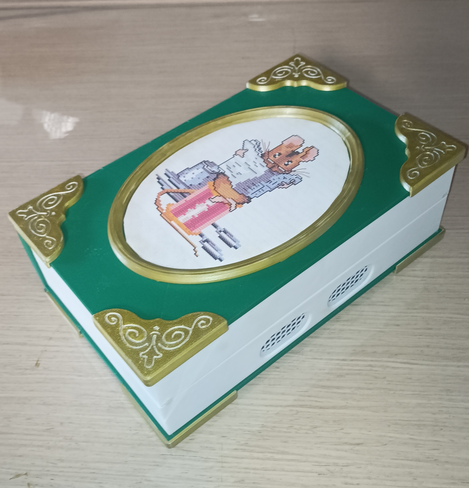

1
Secundaria fabrica
El alumnado construye el dispositivo, monta la electrónica, programa el firmware y documenta el proceso.
Ver guía de SecundariaConectando historias, etapas y personas.
Ecosistema Nativo de Lectura, Aprendizaje, Creatividad y Exploración. Un proyecto educativo interetapas que utiliza un dispositivo de narración tangible para crear, compartir y escuchar historias sin pantallas.

Dispositivo abierto con fichas NFC
ENLACE permite reproducir cuentos y contenidos sonoros mediante objetos físicos identificados con etiquetas NFC. La tecnología queda en segundo plano para favorecer una experiencia de escucha compartida, manipulativa y accesible.
Secundaria fabrica el dispositivo, Primaria crea las historias e Infantil lo utiliza como herramienta de juego, escucha y desconexión de pantallas.
El alumnado construye el dispositivo, monta la electrónica, programa el firmware y documenta el proceso.
Ver guía de SecundariaEl alumnado escribe, graba y organiza historias, canciones, personajes y ambientes sonoros.
Ver guía de PrimariaLas niñas y los niños utilizan el dispositivo como apoyo para la escucha compartida sin pantallas.
Ver guía de InfantilCada ficha contiene una etiqueta NFC asociada a un contenido sonoro.
El dispositivo lee el UID y añade la pista correspondiente a la playlist.
Se pueden cargar hasta cuatro fichas en el orden deseado.
El sistema reproduce la lista mediante controles físicos simples.
Fabricación del dispositivo como proyecto STEAM: electrónica, programación, impresión 3D y prototipado.
Abrir guíaCreación de relatos, voces, personajes y contenidos sonoros para llenar el dispositivo de historias.
Abrir guíaUso del dispositivo como apoyo para la calma, la escucha, el juego simbólico y la desconexión de pantallas.
Abrir guíaCódigo, esquema electrónico, modelos 3D, vídeo demostrativo y documentación del proyecto.